Charades · Animals · page 1/13 · all packs
Reject an image by adding its slug to public/charades/charades-animals/reject.txt (append ! to keep it word-only), then re-run node scripts/genimages.mjs.
1 2 3 4 5 6 7 8 9 10 11 12 13 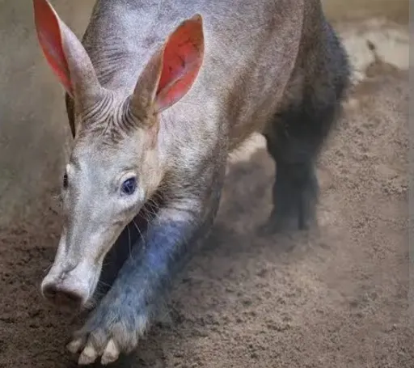
Aardvark aardvarkCC0 · Bonolo Nikita Rankaga · source 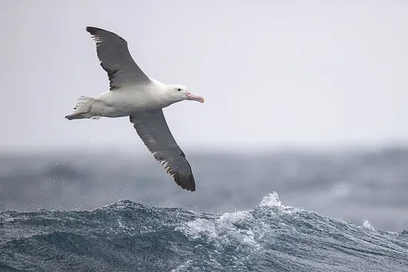
Albatross albatrossCC BY-SA 3.0 · JJ Harrison · source 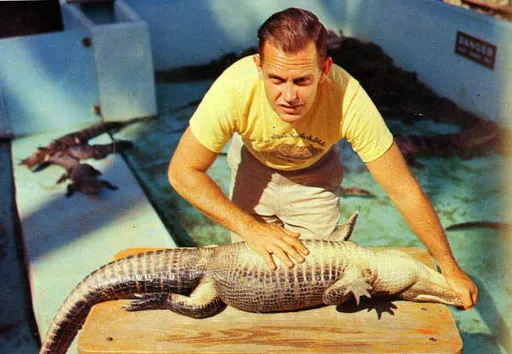
Alligator alligatorPublic domain · State Library and Archives of Florida · source 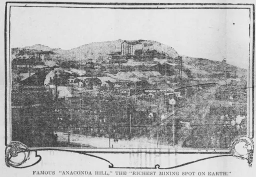
Anaconda anacondaPublic domain · The Tacoma Times (via ((W|Chronicling America · source 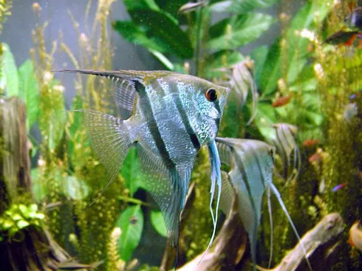
Angelfish angelfishCC BY-SA 1.0 · mendel · source 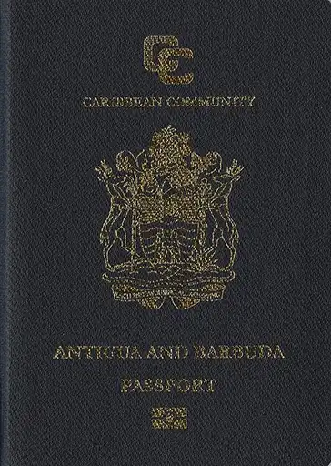
Ant antPublic domain · Mateusxw7 · source 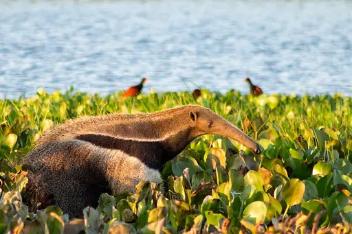
Anteater anteaterCC BY-SA 2.0 · Fernando Flores from Caracas, Venezuela · source 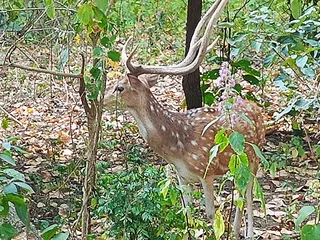
Antelope antelopeCC BY-SA 4.0 · Ding.dong9152 · source 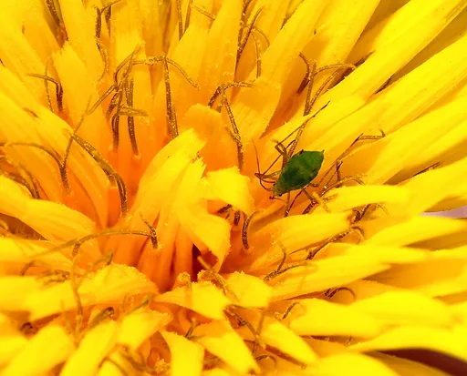
Aphid aphidCC BY-SA 3.0 · Alvesgaspar · source 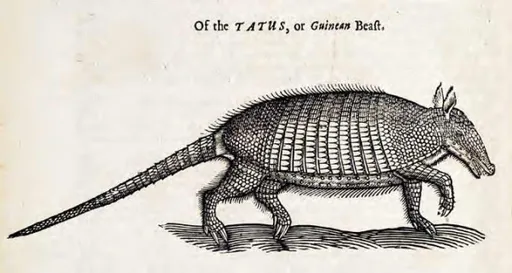
Armadillo armadilloCC0 · Special Collections, University of Houston Libraries · source 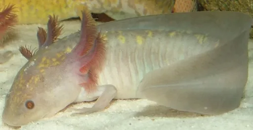
Axolotl axolotlCC0 · Axolotover · source 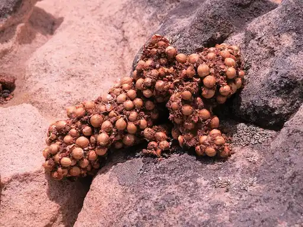
Baboon baboonCC BY-SA 4.0 · JonRichfield · source 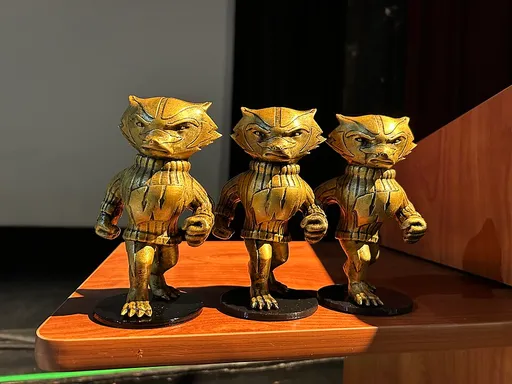
Badger badgerCC0 · Experiment123a · source 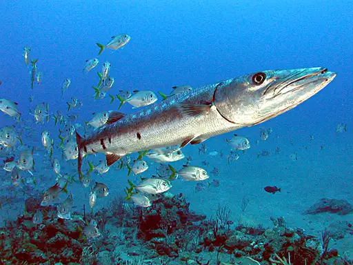
Barracuda barracudaCC BY-SA 2.5 · The original uploader was Aquaimages at English Wikipedia. · source 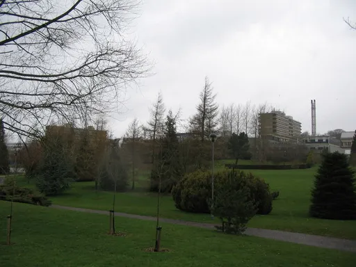
Bat batCC BY-SA 2.0 · Phil Williams · source 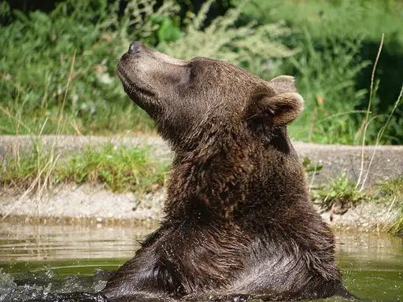
Bear bearCC BY 4.0 · Gerlinde Mairhofer · source 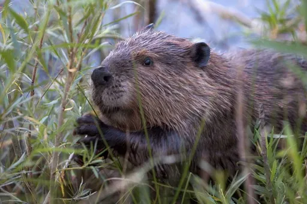
Beaver beaverCC BY 2.5 · No machine-readable author provided. Cszmurlo assumed (based on copyright claims). · source 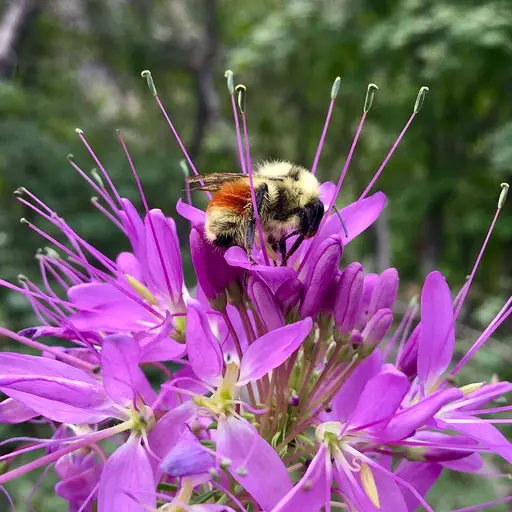
Bee beeCC0 · AdvaitaMakaranda · source 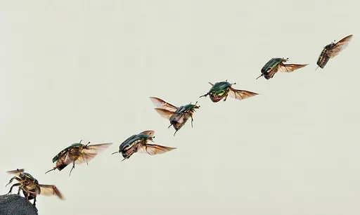
Beetle beetlePublic domain · Bernie · source 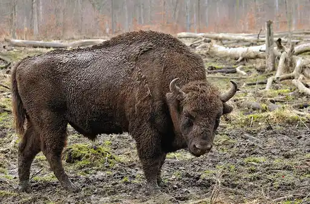
Bison bisonCC BY 3.0 · Michael Gäbler · source 1 2 3 4 5 6 7 8 9 10 11 12 13